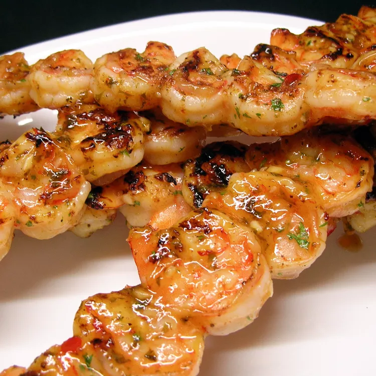

Amazing Spicy Grilled Shrimp

This is an amazing spicy grilled shrimp recipe. It has become my family's new favorite.
Ingredients
- ⅓ cup olive oil
- ¼ cup sesame oil
- ¼ cup chopped fresh parsley
- 2 tablespoons minced garlic
- 1 tablespoon ketchup
- 1 tablespoon Asian chile paste
- 1 teaspoon salt
- 1 teaspoon black pepper
- 3 tablespoons lemon juice
- 2 pounds large shrimp, peeled and deveined
- 12 wooden skewers, soaked in water
Directions
- Whisk together the olive oil, sesame oil, parsley, hot sauce, minced garlic, ketchup, chile sauce, salt, pepper, and lemon juice in a mixing bowl.
Set aside about 1/3 of this marinade to use while grilling.
- Place the shrimp in a large, resealable plastic bag. Pour in the remaining marinade and seal the bag. Refrigerate for 2 hours.
- Preheat an outdoor grill for high heat. Thread shrimp onto skewers, piercing once near the tail and once near the head. Discard marinade.
- Lightly oil grill grate. Cook shrimp for 2 minutes per side until opaque, basting frequently with reserved marinade.